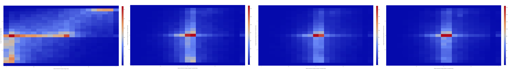
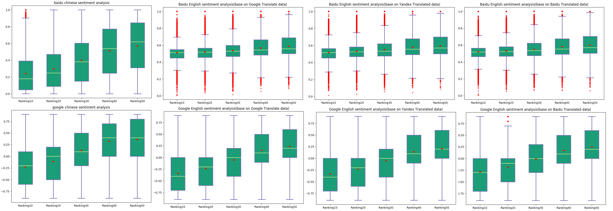
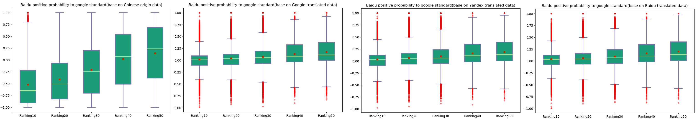

Metamorphic Testing of Cross-Language Sentiment Analysis
Table of Contents
1 Test Data
Total have 46180 movies reviews.
| Ranking | Number of Test Data | Percentage |
|---|---|---|
| Ranking 10 | 7353 | 15.92 % |
| Ramking 20 | 11209 | 24.27 % |
| Ranking 30 | 16223 | 35.13 % |
| Ranking 40 | 7663 | 16.59 % |
| Ranking 50 | 3732 | 8.08 % |
2 Assessing Machine translation tool quality
2.1 Method
- Compare correlation coefficient between Chinese sentiment analysis results and English sentiment analysis results by each
- Using Google, Baidu, Yandex translation tools, translated original Chinese data to English data
- Using same sentiment analysis tool analysis original chinese dataset and translated dataset
- Calculate correlation coefficient between Chinese sentiment analysis results and English sentiment analysis results
- Compare correlation coefficient values. if value is bigger than others, we can say this translation tool, which use in original dataset to English dataset, can achieve better results than others.
2.1.1 Result
- Base on Google sentiment analysis tool
| Google Score for Google translated data | Google Score for Yandex translated data | Google Score Baidu translated data | |
|---|---|---|---|
| Gooogle Score for origin data | 0.512 (Pearson Correlations) p-value: 0.0 | 0.506 (Pearson Correlations) p-value: 0.0 | 0.490 (Pearson Correlations) p-value: 0.0 |
| Google Score for origin data | 0.381 (Kendall Correlations) p-value: 0.0 | 0.375 (Kendall Correlations) p-value: 0.0 | 0.363 (Kendall Correlations) p-value: 0.0 |
| Google Score for origin data | 0.504 (Spearman Correlations) p-value: 0.0 | 0.497 (Spearman Correlations) p-value: 0.0 | 0.482 (Spearman Correlations) p-value: 0.0 |
| Gooogle Score for origin data | 0.512 (Point Biserial) p-value: 0.0 | 0.506 (Point Biserial) p-value: 0.0 | 0.490 (Point Biserial) p-value: 0.0 |
- Google translation tool quality > Yandex translation tool quality > Baidu translation tool quality
- Base on Baidu sentiment analysis tool
| Baidu Positive Probability for Google translated data | Baidu Positive Probability for Yandex translated data | Baidu Positive Probability for Baidu translated data | |
|---|---|---|---|
| Baidu Positive Probability for origin data | 0.288 (Pearson Correlations) p-value: 0.0 | 0.280 (Pearson Correlations) p-value: 0.0 | 0.237 (Pearson Correlations) p-value: 0.0 |
| Baidu Positive Probability for origin data | 0.188 (Kendall Correlations) p-value: 0.0 | 0.174 (Kendall Correlations) p-value: 0.0 | 0.146 (Kendall Correlations) p-value:0.0 |
| Baidu Positive Probability for origin data | 0.271 (Spearman Correlations) p-value: 0.0 | 0.249 (Spearman Correlations) p-value: 0.0 | 0.210 (Spearman Correlations) p-value: 0.0 |
| Baidu Positive Probability for origin data | 0.288 (Point Biserial) p-value: 0.0 | 0.280 (Point Biserial) p-value: 0.0 | 0.237 (Point Biserial) p-value: 0.0 |
- Google translation tool quality > Yandex translation tool quality > Baidu translation tool quality

- Compare correlation coefficient between sentiment analysis results and user rating
- Divide the sentiment analysis scores between [-1,1] into 5 regions, which are 10, 20, 30, 40, 50. Each interval is 0.4.
| regions | scope |
|---|---|
| 10 | [-1, -0.6] |
| 20 | (-0.6, -0.2] |
| 30 | (-0.2, 0.2) |
| 40 | [0.2, 0.6) |
| 50 | [0.6, 1] |
- calculate correlation coefficient between regions and user rating
- Base on Google sentiment analysis tool
| Google score for Google Translated data | Google score for Yandex Translated data | Google score for Baidu Translated data | |
|---|---|---|---|
| ranking | 0.3639 (pearson Correlation) p-value: 0.0 | 0.3621 (pearson correlation) p-value: 0.0 | 0.3546 (pearson correlation) p-value: 0.0 |
| ranking | 0.3645 (spearman correlation) p-value: 0.0 | 0.3623 (spearman correlation) p-value: 0.0 | 0.3555 (spearman correlation) p-value: 0.0 |
| ranking | 0.3689 (point biserial correlation) p-value: 0.0 | 0.3621 (point biserial correlation) p-value: 0.0 | 0.3546 (point biserial correlation) p-value: 0.0 |
| ranking | 0.3009 (kendall correlation) p-value: 0.0 | 0.2999 (kendall correlation) p-value: 0.0 | 0.2934 (kendall correlation) p-value: 0.0 |
- Google translation tool quality > Yandex translation tool quality > Baidu translation tool quality
- Base on Baidu sentiment analysis tool
| Baidu sentiment score (Google standard) for Google Translated data | Baidu sentiment score (Google standard) for Yandex Translated data | Baidu sentiment score (Google standard) for Baidu Translated data | |
|---|---|---|---|
| ranking | 0.1638 (pearson correlation) p-value: 0.0 | 0.1645 (pearson correlation) p-value: 0.0 | 0.1611 (pearson correlation) p-value: 0.0 |
| ranking | 0.1687 (spearman correlation) p-value: 0.0 | 0.1682 (spearman correlation) p-value: 0.0 | 0.1624 (spearman correlation) p-value: 0.0 |
| ranking | 0.1638 (point biserial correlation) p-value: 0.0 | 0.1645 (point biserial correlation) p-value: 0.0 | 0.1611 (point biserial correlation) p-value: 0.0 |
| ranking | 0.1455 (kendall correlation) p-value: 0.0 | 0.1447 (kendall correlation) p-value: 0.0 | 0.1394 (kendall correlation) p-value: 0.0 |
- Google translation tool quality similar with Yandex translation tool quality
- Google translation tool and Yandex translation tool's quality better than Baidu
- draw heatmap
- Divide the sentiment analysis scores between [-1, 1] into 20 regions, 0, 1, 2, 3 … 18, 19. Each interval is 0.1
- Draw the heatmaps between the user rating (i.e., 10, 20, …, 50) and sentiment analysis scores (20 subregions).


3 Assessing Sentiment analysis tool quality
3.1 Chinese Sentiment analysis quality
| Baidu Chinese sentiment analysis tool's score (Google Standard) | Google Chinese sentiment analysis tool's score | |
|---|---|---|
| ranking | 0.3552 (pearson Correlation) p-value: 0.0 | 0.3897 (pearson correlation) p-value: 0.0 |
| ranking | 0.3419 (spearman correlation) p-value: 0.0 | 0.3982 (spearman correlation) p-value: 0.0 |
| ranking | 0.3552 (point biserial) p-value: 0.0 | 0.3897 (point biserial correlation) p-value: 0.0 |
| ranking | 0.2842 (kendall correlation) p-value: 0.0 | 0.3281 (kendall correlation) p-value: 0.0 |
 
- Google sentiment analysis tool quality > Baidu sentiment analysis tool quality